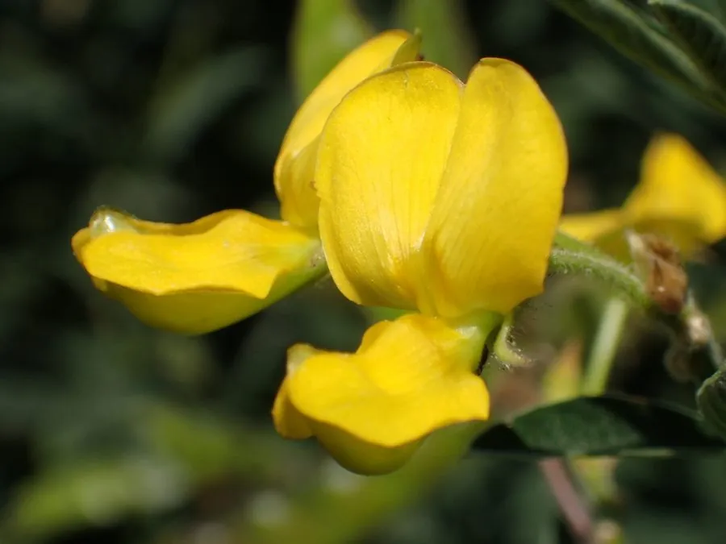

农作物与经济植物 · 植物界
木豆 Cajanus cajan

豆科木豆属多年生灌木状草本，荚果扁平、籽粒富含蛋白，耐旱耐瘠，是热带地区重要的食用与饲料豆类。
- 分类
- 门被子植物门纲木兰纲目豆目科豆科属木豆属
- 栖息环境
- 热带与亚热带旱地、山坡与村庄周边，耐旱耐瘠薄
- 地理分布
- 原产印度；中国广东、广西、云南、海南、福建等地栽培
- 保护级别
- IUCN 暂无评估；栽培广泛，野生种群未受明显威胁
物种志
木豆为多年生灌木状草本，高 1–3 米，茎直立、木质化，多分枝，被短柔毛。叶为三出复叶，小叶披针形至椭圆形，长 5–10 厘米。总状花序腋生，花黄色或带紫红色斑纹；荚果扁平、长圆形，长 4–7 厘米，成熟时褐色，内含 2–5 粒种子，种子圆形，褐色或灰白色。
木豆原产印度，广泛栽培于热带与亚热带地区，在中国广东、广西、云南、海南、福建等地有种植，耐旱、耐瘠薄、固氮能力强。它的籽粒富含蛋白质，可煮食、做豆泥或磨粉，是印度与非洲重要的植物蛋白来源；茎叶可作饲料与绿肥，枝条可作薪柴。木豆还是紫胶虫的优良寄主，可生产紫胶。
形态与习性
- 株高1–3 米，灌木状、多分枝
- 花期5–8 月，花黄色带紫纹
- 果期9–11 月，荚果扁平
- 光照喜光，短日照作物
- 水分耐旱，忌积水
- 土壤不择土壤，耐瘠薄
- 主要用途食用豆类、饲料、绿肥与紫胶寄主
趣味知识
- 木豆是少数能长成灌木状的食用豆类，茎干木质化，可活多年。
- 它的籽粒蛋白质含量高，是印度重要的植物蛋白来源。
- 木豆耐旱耐瘠，还能固氮，常被种在贫瘠的坡地上改良土壤。
- 木豆是紫胶虫的优良寄主，枝条上可收获紫胶。